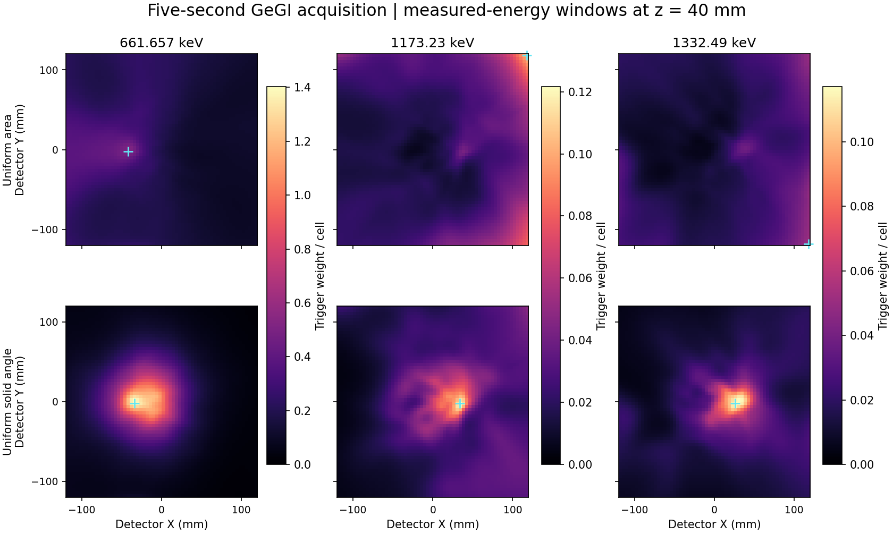
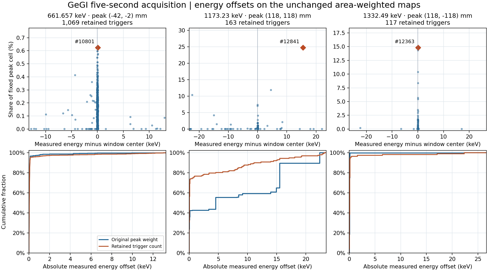

GeGI five-second acquisition and reconstruction
In the 1,173.23 keV window, one original trigger supplied 24.79% of the brightest cell on the ±120 mm uniform-area map. Removing trigger 12,841 moves the maximum 236 mm to (118, −118) mm. With the trigger retained, widening the map moves the maximum to the larger corner. On the same measured events, the uniform-solid-angle peak lies at (34, −2) mm.
Targeted transport replay identifies the leading trigger as an escaping 1,332 keV photon with three scatters; the dominant 1,332 keV-window contributors instead contain full-energy photons with merged multiple interactions.
The conditional 3D fits put the Cs-137 window close to the programmed source. The Co-60 positions vary with clock half and assumed background. These data leave cobalt localization unvalidated.
What drives the source-plane peaks?


Each Compton cone distributes its assigned trigger weight over the finite plane grid. Changing the grid changes the normalization. Equal-area cells have equal initial weights under the area prior. The solid-angle prior weights cells by the angular area they subtend from the detector center.
| Window | Plane extent | Prior | Brightest X/Y (mm) | Top 5 share | Peak contributors |
|---|---|---|---|---|---|
| 661.657 keV | ±120 mm | uniform area | (−42, −2) | 3.0% | #10801, #27123, #14799, #30302, #40804 |
| 661.657 keV | ±120 mm | uniform solid angle | (−34, −2) | 3.6% | #3424, #49596, #13600, #33560, #12671 |
| 661.657 keV | ±240 mm | uniform area | (−42, −2) | 3.1% | #10801, #27123, #40804, #30302, #4191 |
| 661.657 keV | ±240 mm | uniform solid angle | (−34, −2) | 3.5% | #3424, #49596, #13600, #12671, #33560 |
| 1173.23 keV | ±120 mm | uniform area | (118, 118) (edge) | 61.4% | #12841, #42261, #19477, #49893, #22781 |
| 1173.23 keV | ±120 mm | uniform solid angle | (34, −2) | 21.2% | #4602, #16161, #36290, #13237, #38651 |
| 1173.23 keV | ±240 mm | uniform area | (238, 238) (edge) | 45.7% | #12841, #19477, #49893, #22781, #42261 |
| 1173.23 keV | ±240 mm | uniform solid angle | (34, −2) | 20.8% | #4602, #16161, #36290, #13237, #38651 |
| 1332.49 keV | ±120 mm | uniform area | (118, −118) (edge) | 53.5% | #12363, #21499, #6774, #35337, #41923 |
| 1332.49 keV | ±120 mm | uniform solid angle | (26, −2) | 21.4% | #6731, #44035, #30846, #18472, #18451 |
| 1332.49 keV | ±240 mm | uniform area | (38, 2) | 19.8% | #18150, #49855, #12608, #48698, #32986 |
| 1332.49 keV | ±240 mm | uniform solid angle | (26, −2) | 21.0% | #6731, #44035, #30846, #18150, #18451 |
Each row links the five largest contributors to its peak cell. The acquisition census includes every retained two-strip trigger.
Energy-window membership uses measured energy. Programmed source positions enter only when scoring the completed fits.
Measured energy offsets and the original peak contributions


The 1,173 keV corner reaches half its weight only at an absolute energy offset of 4.577 keV, although the median retained-candidate offset is 0.075 keV. Its three largest contributors supply 47.00% of the corner. The 1,332 keV corner reaches half its weight within 0.091 keV of its window center, so a broad energy window alone cannot explain that second artifact. The original half-widths are max(5 keV, 2% of the nominal line energy).
Separate known point-deposit injections give simulated total-energy residuals of 0.038 keV RMS for 48 general conditions and 0.035 keV for eight targeted Cs conditions. These are readout checks, not monoenergetic photon resolution measurements or a calibrated selection rule.
Original triggers and interaction orders
Trigger 3,424 · 661.70 keV
| Pairing | Order | Site energies (keV) | Fit depths (mm) | Cone | Waveform residual |
|---|---|---|---|---|---|
| 2 | X05/Y07 → X08/Y06 | 113.54 → 548.17 | 3.96 → −5.00 | 32.85° opening, −6.25° source residual | 45.10 ADC codes across all 34 contacts. Weighted fit RMS 41.84 × nominal noise on 10 contacts. |
The source residual is the angle from the cone axis to the programmed source minus the energy-derived opening. The evidence JSON includes the original ADC digest and per-contact residuals.
Trigger 4,191 · 661.69 keV
| Pairing | Order | Site energies (keV) | Fit depths (mm) | Cone | Waveform residual |
|---|---|---|---|---|---|
| 1 | X08/Y11 → X10/Y12 | 199.35 → 462.34 | 1.88 → 2.37 | 48.16° opening, −1.03° source residual | 53.94 ADC codes across all 34 contacts. Weighted fit RMS 52.88 × nominal noise on 9 contacts. |
| 1 | X10/Y12 → X08/Y11 | 462.34 → 199.35 | 2.37 → 1.88 | 142.28° opening, −2.02° source residual | 53.94 ADC codes across all 34 contacts. Weighted fit RMS 52.88 × nominal noise on 9 contacts. |
The source residual is the angle from the cone axis to the programmed source minus the energy-derived opening. The evidence JSON includes the original ADC digest and per-contact residuals.
Trigger 10,801 · 661.76 keV
| Pairing | Order | Site energies (keV) | Fit depths (mm) | Cone | Waveform residual |
|---|---|---|---|---|---|
| 1 | X07/Y13 → X09/Y15 | 152.80 → 508.97 | 2.58 → 1.82 | 39.81° opening, 1.69° source residual | 40.29 ADC codes across all 34 contacts. Weighted fit RMS 37.70 × nominal noise on 10 contacts. |
The source residual is the angle from the cone axis to the programmed source minus the energy-derived opening. The evidence JSON includes the original ADC digest and per-contact residuals.
Trigger 12,671 · 661.63 keV
| Pairing | Order | Site energies (keV) | Fit depths (mm) | Cone | Waveform residual |
|---|---|---|---|---|---|
| 2 | X10/Y06 → X14/Y05 | 132.48 → 529.15 | 0.55 → −2.16 | 36.23° opening, −4.95° source residual | 45.18 ADC codes across all 34 contacts. Weighted fit RMS 41.78 × nominal noise on 10 contacts. |
The source residual is the angle from the cone axis to the programmed source minus the energy-derived opening. The evidence JSON includes the original ADC digest and per-contact residuals.
Trigger 13,600 · 661.75 keV
| Pairing | Order | Site energies (keV) | Fit depths (mm) | Cone | Waveform residual |
|---|---|---|---|---|---|
| 1 | X06/Y10 → X08/Y11 | 202.79 → 458.96 | 0.05 → −2.22 | 48.79° opening, −5.06° source residual | 47.33 ADC codes across all 34 contacts. Weighted fit RMS 46.55 × nominal noise on 9 contacts. |
| 1 | X08/Y11 → X06/Y10 | 458.96 → 202.79 | −2.22 → 0.05 | 138.38° opening, 5.63° source residual | 47.33 ADC codes across all 34 contacts. Weighted fit RMS 46.55 × nominal noise on 9 contacts. |
The source residual is the angle from the cone axis to the programmed source minus the energy-derived opening. The evidence JSON includes the original ADC digest and per-contact residuals.
Trigger 14,799 · 661.69 keV
| Pairing | Order | Site energies (keV) | Fit depths (mm) | Cone | Waveform residual |
|---|---|---|---|---|---|
| 2 | X07/Y07 → X14/Y06 | 117.39 → 544.29 | 3.52 → −3.71 | 33.55° opening, 2.47° source residual | 54.70 ADC codes across all 34 contacts. Weighted fit RMS 50.53 × nominal noise on 10 contacts. |
The source residual is the angle from the cone axis to the programmed source minus the energy-derived opening. The evidence JSON includes the original ADC digest and per-contact residuals.
Trigger 27,123 · 661.66 keV
| Pairing | Order | Site energies (keV) | Fit depths (mm) | Cone | Waveform residual |
|---|---|---|---|---|---|
| 1 | X06/Y13 → X11/Y16 | 145.57 → 516.09 | 3.65 → 1.76 | 38.54° opening, 3.97° source residual | 74.42 ADC codes across all 34 contacts. Weighted fit RMS 26.26 × nominal noise on 11 contacts. |
The source residual is the angle from the cone axis to the programmed source minus the energy-derived opening. The evidence JSON includes the original ADC digest and per-contact residuals.
Trigger 30,302 · 661.79 keV
| Pairing | Order | Site energies (keV) | Fit depths (mm) | Cone | Waveform residual |
|---|---|---|---|---|---|
| 1 | X05/Y11 → X09/Y14 | 159.04 → 502.75 | 1.79 → −2.02 | 40.91° opening, 6.70° source residual | 30.00 ADC codes across all 34 contacts. Weighted fit RMS 25.30 × nominal noise on 12 contacts. |
The source residual is the angle from the cone axis to the programmed source minus the energy-derived opening. The evidence JSON includes the original ADC digest and per-contact residuals.
Trigger 33,560 · 661.68 keV
| Pairing | Order | Site energies (keV) | Fit depths (mm) | Cone | Waveform residual |
|---|---|---|---|---|---|
| 1 | X04/Y13 → X06/Y15 | 179.79 → 481.89 | 1.37 → −2.01 | 44.61° opening, −4.31° source residual | 34.41 ADC codes across all 34 contacts. Weighted fit RMS 31.88 × nominal noise on 10 contacts. |
The source residual is the angle from the cone axis to the programmed source minus the energy-derived opening. The evidence JSON includes the original ADC digest and per-contact residuals.
Trigger 40,804 · 661.73 keV
| Pairing | Order | Site energies (keV) | Fit depths (mm) | Cone | Waveform residual |
|---|---|---|---|---|---|
| 1 | X08/Y12 → X12/Y14 | 165.03 → 496.70 | 2.68 → 3.77 | 41.98° opening, 2.96° source residual | 21.76 ADC codes across all 34 contacts. Weighted fit RMS 18.52 × nominal noise on 11 contacts. |
The source residual is the angle from the cone axis to the programmed source minus the energy-derived opening. The evidence JSON includes the original ADC digest and per-contact residuals.
Trigger 49,596 · 661.69 keV
| Pairing | Order | Site energies (keV) | Fit depths (mm) | Cone | Waveform residual |
|---|---|---|---|---|---|
| 1 | X05/Y13 → X08/Y15 | 154.63 → 507.07 | 0.16 → −5.00 | 40.14° opening, −3.85° source residual | 61.82 ADC codes across all 34 contacts. Weighted fit RMS 53.71 × nominal noise on 11 contacts. |
The source residual is the angle from the cone axis to the programmed source minus the energy-derived opening. The evidence JSON includes the original ADC digest and per-contact residuals.
Trigger 4,602 · 1,173.28 keV
| Pairing | Order | Site energies (keV) | Fit depths (mm) | Cone | Waveform residual |
|---|---|---|---|---|---|
| 2 | X12/Y08 → X16/Y07 | 928.04 → 245.24 | −4.48 → 2.55 | 130.40° opening, 3.69° source residual | 39.57 ADC codes across all 34 contacts. Weighted fit RMS 38.15 × nominal noise on 9 contacts. |
| 2 | X16/Y07 → X12/Y08 | 245.24 → 928.04 | 2.55 → −4.48 | 27.76° opening, 41.99° source residual | 39.57 ADC codes across all 34 contacts. Weighted fit RMS 38.15 × nominal noise on 9 contacts. |
The source residual is the angle from the cone axis to the programmed source minus the energy-derived opening. The evidence JSON includes the original ADC digest and per-contact residuals.
Trigger 12,841 · 1,188.74 keV
| Pairing | Order | Site energies (keV) | Fit depths (mm) | Cone | Waveform residual |
|---|---|---|---|---|---|
| 1 | X09/Y07 → X08/Y06 | 34.37 → 1,154.37 | −3.00 → 5.00 | 9.18° opening, 92.35° source residual | 144.26 ADC codes across all 34 contacts. Weighted fit RMS 150.57 × nominal noise on 8 contacts. |
The source residual is the angle from the cone axis to the programmed source minus the energy-derived opening. The evidence JSON includes the original ADC digest and per-contact residuals.
Trigger 13,237 · 1,173.19 keV
| Pairing | Order | Site energies (keV) | Fit depths (mm) | Cone | Waveform residual |
|---|---|---|---|---|---|
| 2 | X10/Y13 → X15/Y09 | 929.09 → 244.10 | 0.81 → −0.76 | 131.13° opening, 1.05° source residual | 56.96 ADC codes across all 34 contacts. Weighted fit RMS 48.56 × nominal noise on 12 contacts. |
| 2 | X15/Y09 → X10/Y13 | 244.10 → 929.09 | −0.76 → 0.81 | 27.68° opening, 54.47° source residual | 56.96 ADC codes across all 34 contacts. Weighted fit RMS 48.56 × nominal noise on 12 contacts. |
The source residual is the angle from the cone axis to the programmed source minus the energy-derived opening. The evidence JSON includes the original ADC digest and per-contact residuals.
Trigger 16,161 · 1,173.29 keV
| Pairing | Order | Site energies (keV) | Fit depths (mm) | Cone | Waveform residual |
|---|---|---|---|---|---|
| 2 | X10/Y09 → X16/Y08 | 319.94 → 853.35 | 2.70 → −1.00 | 33.21° opening, 90.82° source residual | 132.95 ADC codes across all 34 contacts. Weighted fit RMS 57.51 × nominal noise on 9 contacts. |
| 2 | X16/Y08 → X10/Y09 | 853.35 → 319.94 | −1.00 → 2.70 | 99.30° opening, −5.81° source residual | 132.95 ADC codes across all 34 contacts. Weighted fit RMS 57.51 × nominal noise on 9 contacts. |
The source residual is the angle from the cone axis to the programmed source minus the energy-derived opening. The evidence JSON includes the original ADC digest and per-contact residuals.
Trigger 19,477 · 1,150.86 keV
| Pairing | Order | Site energies (keV) | Fit depths (mm) | Cone | Waveform residual |
|---|---|---|---|---|---|
| 1 | X08/Y08 → X06/Y06 | 60.67 → 1,090.19 | 1.47 → 2.77 | 12.76° opening, 47.97° source residual | 101.40 ADC codes across all 34 contacts. Weighted fit RMS 94.71 × nominal noise on 10 contacts. |
The source residual is the angle from the cone axis to the programmed source minus the energy-derived opening. The evidence JSON includes the original ADC digest and per-contact residuals.
Trigger 22,781 · 1,173.23 keV
| Pairing | Order | Site energies (keV) | Fit depths (mm) | Cone | Waveform residual |
|---|---|---|---|---|---|
| 1 | X09/Y09 → X08/Y08 | 157.77 → 1,015.46 | −1.10 → 0.79 | 21.20° opening, 55.13° source residual | 130.50 ADC codes across all 34 contacts. Weighted fit RMS 136.56 × nominal noise on 8 contacts. |
The source residual is the angle from the cone axis to the programmed source minus the energy-derived opening. The evidence JSON includes the original ADC digest and per-contact residuals.
Trigger 36,290 · 1,173.30 keV
| Pairing | Order | Site energies (keV) | Fit depths (mm) | Cone | Waveform residual |
|---|---|---|---|---|---|
| 2 | X13/Y06 → X16/Y05 | 332.98 → 840.32 | −4.67 → −3.80 | 34.17° opening, 73.97° source residual | 78.79 ADC codes across all 34 contacts. Weighted fit RMS 65.43 × nominal noise on 9 contacts. |
| 2 | X16/Y05 → X13/Y06 | 840.32 → 332.98 | −3.80 → −4.67 | 95.69° opening, −5.46° source residual | 78.79 ADC codes across all 34 contacts. Weighted fit RMS 65.43 × nominal noise on 9 contacts. |
The source residual is the angle from the cone axis to the programmed source minus the energy-derived opening. The evidence JSON includes the original ADC digest and per-contact residuals.
Trigger 38,651 · 1,173.34 keV
| Pairing | Order | Site energies (keV) | Fit depths (mm) | Cone | Waveform residual |
|---|---|---|---|---|---|
| 1 | X03/Y06 → X06/Y07 | 949.49 → 223.85 | 1.47 → 5.00 | 147.91° opening, 13.81° source residual | 28.46 ADC codes across all 34 contacts. Weighted fit RMS 26.62 × nominal noise on 10 contacts. |
| 1 | X06/Y07 → X03/Y06 | 223.85 → 949.49 | 5.00 → 1.47 | 26.19° opening, −3.38° source residual | 28.46 ADC codes across all 34 contacts. Weighted fit RMS 26.62 × nominal noise on 10 contacts. |
The source residual is the angle from the cone axis to the programmed source minus the energy-derived opening. The evidence JSON includes the original ADC digest and per-contact residuals.
Trigger 42,261 · 1,177.80 keV
| Pairing | Order | Site energies (keV) | Fit depths (mm) | Cone | Waveform residual |
|---|---|---|---|---|---|
| 1 | X15/Y06 → X16/Y08 | 967.72 → 210.09 | −2.00 → −2.55 | 176.84° opening, −70.59° source residual | 57.63 ADC codes across all 34 contacts. Weighted fit RMS 59.81 × nominal noise on 8 contacts. |
| 1 | X16/Y08 → X15/Y06 | 210.09 → 967.72 | −2.55 → −2.00 | 25.07° opening, 63.06° source residual | 57.63 ADC codes across all 34 contacts. Weighted fit RMS 59.81 × nominal noise on 8 contacts. |
The source residual is the angle from the cone axis to the programmed source minus the energy-derived opening. The evidence JSON includes the original ADC digest and per-contact residuals.
Trigger 49,893 · 1,173.25 keV
| Pairing | Order | Site energies (keV) | Fit depths (mm) | Cone | Waveform residual |
|---|---|---|---|---|---|
| 1 | X07/Y12 → X06/Y11 | 194.85 → 978.40 | 2.00 → 5.00 | 24.04° opening, 61.81° source residual | 52.64 ADC codes across all 34 contacts. Weighted fit RMS 54.60 × nominal noise on 8 contacts. |
The source residual is the angle from the cone axis to the programmed source minus the energy-derived opening. The evidence JSON includes the original ADC digest and per-contact residuals.
Trigger 6,731 · 1,332.54 keV
| Pairing | Order | Site energies (keV) | Fit depths (mm) | Cone | Waveform residual |
|---|---|---|---|---|---|
| 2 | X09/Y08 → X11/Y07 | 1,078.07 → 254.46 | −3.00 → −0.63 | 128.66° opening, 6.89° source residual | 66.17 ADC codes across all 34 contacts. Weighted fit RMS 64.71 × nominal noise on 9 contacts. |
| 2 | X11/Y07 → X09/Y08 | 254.46 → 1,078.07 | −0.63 → −3.00 | 24.57° opening, 29.05° source residual | 66.17 ADC codes across all 34 contacts. Weighted fit RMS 64.71 × nominal noise on 9 contacts. |
The source residual is the angle from the cone axis to the programmed source minus the energy-derived opening. The evidence JSON includes the original ADC digest and per-contact residuals.
Trigger 6,774 · 1,332.58 keV
| Pairing | Order | Site energies (keV) | Fit depths (mm) | Cone | Waveform residual |
|---|---|---|---|---|---|
| 2 | X14/Y09 → X16/Y08 | 990.42 → 342.16 | −0.01 → −3.19 | 96.31° opening, −4.93° source residual | 108.22 ADC codes across all 34 contacts. Weighted fit RMS 113.27 × nominal noise on 8 contacts. |
| 2 | X16/Y08 → X14/Y09 | 342.16 → 990.42 | −3.19 → −0.01 | 29.83° opening, 74.15° source residual | 108.22 ADC codes across all 34 contacts. Weighted fit RMS 113.27 × nominal noise on 8 contacts. |
The source residual is the angle from the cone axis to the programmed source minus the energy-derived opening. The evidence JSON includes the original ADC digest and per-contact residuals.
Trigger 12,363 · 1,332.60 keV
| Pairing | Order | Site energies (keV) | Fit depths (mm) | Cone | Waveform residual |
|---|---|---|---|---|---|
| 2 | X15/Y11 → X16/Y10 | 810.23 → 522.37 | 3.35 → −4.15 | 66.09° opening, −1.71° source residual | 120.24 ADC codes across all 34 contacts. Weighted fit RMS 120.18 × nominal noise on 7 contacts. |
| 2 | X16/Y10 → X15/Y11 | 522.37 → 810.23 | −4.15 → 3.35 | 41.17° opening, 86.34° source residual | 120.24 ADC codes across all 34 contacts. Weighted fit RMS 120.18 × nominal noise on 7 contacts. |
The source residual is the angle from the cone axis to the programmed source minus the energy-derived opening. The evidence JSON includes the original ADC digest and per-contact residuals.
Trigger 12,608 · 1,332.58 keV
| Pairing | Order | Site energies (keV) | Fit depths (mm) | Cone | Waveform residual |
|---|---|---|---|---|---|
| 1 | X15/Y09 → X16/Y11 | 1,031.74 → 300.84 | −4.48 → −1.61 | 108.37° opening, −2.39° source residual | 97.82 ADC codes across all 34 contacts. Weighted fit RMS 101.83 × nominal noise on 8 contacts. |
| 1 | X16/Y11 → X15/Y09 | 300.84 → 1,031.74 | −1.61 → −4.48 | 27.35° opening, 61.26° source residual | 97.82 ADC codes across all 34 contacts. Weighted fit RMS 101.83 × nominal noise on 8 contacts. |
The source residual is the angle from the cone axis to the programmed source minus the energy-derived opening. The evidence JSON includes the original ADC digest and per-contact residuals.
Trigger 18,150 · 1,332.61 keV
| Pairing | Order | Site energies (keV) | Fit depths (mm) | Cone | Waveform residual |
|---|---|---|---|---|---|
| 2 | X10/Y12 → X09/Y13 | 188.22 → 1,144.39 | 5.00 → −1.25 | 20.46° opening, −7.82° source residual | 88.68 ADC codes across all 34 contacts. Weighted fit RMS 92.35 × nominal noise on 8 contacts. |
The source residual is the angle from the cone axis to the programmed source minus the energy-derived opening. The evidence JSON includes the original ADC digest and per-contact residuals.
Trigger 18,451 · 1,332.48 keV
| Pairing | Order | Site energies (keV) | Fit depths (mm) | Cone | Waveform residual |
|---|---|---|---|---|---|
| 1 | X09/Y04 → X10/Y05 | 1,087.22 → 245.27 | 2.65 → 3.53 | 134.42° opening, 9.78° source residual | 54.11 ADC codes across all 34 contacts. Weighted fit RMS 55.94 × nominal noise on 8 contacts. |
| 1 | X10/Y05 → X09/Y04 | 245.27 → 1,087.22 | 3.53 → 2.65 | 24.01° opening, 16.34° source residual | 54.11 ADC codes across all 34 contacts. Weighted fit RMS 55.94 × nominal noise on 8 contacts. |
The source residual is the angle from the cone axis to the programmed source minus the energy-derived opening. The evidence JSON includes the original ADC digest and per-contact residuals.
Trigger 18,472 · 1,332.52 keV
| Pairing | Order | Site energies (keV) | Fit depths (mm) | Cone | Waveform residual |
|---|---|---|---|---|---|
| 1 | X13/Y04 → X15/Y05 | 1,082.43 → 250.09 | −5.00 → 0.14 | 131.28° opening, 11.55° source residual | 183.16 ADC codes across all 34 contacts. Weighted fit RMS 179.64 × nominal noise on 9 contacts. |
| 1 | X15/Y05 → X13/Y04 | 250.09 → 1,082.43 | 0.14 → −5.00 | 24.30° opening, 22.46° source residual | 183.16 ADC codes across all 34 contacts. Weighted fit RMS 179.64 × nominal noise on 9 contacts. |
The source residual is the angle from the cone axis to the programmed source minus the energy-derived opening. The evidence JSON includes the original ADC digest and per-contact residuals.
Trigger 21,499 · 1,332.58 keV
| Pairing | Order | Site energies (keV) | Fit depths (mm) | Cone | Waveform residual |
|---|---|---|---|---|---|
| 2 | X06/Y05 → X07/Y04 | 1,113.05 → 219.53 | 1.73 → −0.08 | 160.78° opening, −58.41° source residual | 107.28 ADC codes across all 34 contacts. Weighted fit RMS 112.14 × nominal noise on 8 contacts. |
| 2 | X07/Y04 → X06/Y05 | 219.53 → 1,113.05 | −0.08 → 1.73 | 22.43° opening, 61.35° source residual | 107.28 ADC codes across all 34 contacts. Weighted fit RMS 112.14 × nominal noise on 8 contacts. |
The source residual is the angle from the cone axis to the programmed source minus the energy-derived opening. The evidence JSON includes the original ADC digest and per-contact residuals.
Trigger 30,846 · 1,332.63 keV
| Pairing | Order | Site energies (keV) | Fit depths (mm) | Cone | Waveform residual |
|---|---|---|---|---|---|
| 2 | X12/Y09 → X13/Y08 | 1,069.95 → 262.68 | 1.71 → 3.75 | 124.18° opening, 4.45° source residual | 89.99 ADC codes across all 34 contacts. Weighted fit RMS 93.27 × nominal noise on 8 contacts. |
| 2 | X13/Y08 → X12/Y09 | 262.68 → 1,069.95 | 3.75 → 1.71 | 25.06° opening, 34.38° source residual | 89.99 ADC codes across all 34 contacts. Weighted fit RMS 93.27 × nominal noise on 8 contacts. |
The source residual is the angle from the cone axis to the programmed source minus the energy-derived opening. The evidence JSON includes the original ADC digest and per-contact residuals.
Trigger 32,986 · 1,332.53 keV
| Pairing | Order | Site energies (keV) | Fit depths (mm) | Cone | Waveform residual |
|---|---|---|---|---|---|
| 2 | X15/Y08 → X16/Y06 | 1,022.00 → 310.53 | −0.22 → 3.00 | 105.19° opening, 2.59° source residual | 129.39 ADC codes across all 34 contacts. Weighted fit RMS 134.14 × nominal noise on 8 contacts. |
| 2 | X16/Y06 → X15/Y08 | 310.53 → 1,022.00 | 3.00 → −0.22 | 27.93° opening, 60.54° source residual | 129.39 ADC codes across all 34 contacts. Weighted fit RMS 134.14 × nominal noise on 8 contacts. |
The source residual is the angle from the cone axis to the programmed source minus the energy-derived opening. The evidence JSON includes the original ADC digest and per-contact residuals.
Trigger 35,337 · 1,332.60 keV
| Pairing | Order | Site energies (keV) | Fit depths (mm) | Cone | Waveform residual |
|---|---|---|---|---|---|
| 2 | X08/Y14 → X09/Y13 | 999.47 → 333.13 | 4.76 → −1.46 | 98.65° opening, 3.84° source residual | 67.05 ADC codes across all 34 contacts. Weighted fit RMS 69.82 × nominal noise on 8 contacts. |
| 2 | X09/Y13 → X08/Y14 | 333.13 → 999.47 | −1.46 → 4.76 | 29.29° opening, 56.94° source residual | 67.05 ADC codes across all 34 contacts. Weighted fit RMS 69.82 × nominal noise on 8 contacts. |
The source residual is the angle from the cone axis to the programmed source minus the energy-derived opening. The evidence JSON includes the original ADC digest and per-contact residuals.
Trigger 41,923 · 1,332.58 keV
| Pairing | Order | Site energies (keV) | Fit depths (mm) | Cone | Waveform residual |
|---|---|---|---|---|---|
| 2 | X14/Y04 → X12/Y05 | 168.54 → 1,164.04 | 1.52 → −0.31 | 19.18° opening, 61.11° source residual | 82.66 ADC codes across all 34 contacts. Weighted fit RMS 81.56 × nominal noise on 9 contacts. |
The source residual is the angle from the cone axis to the programmed source minus the energy-derived opening. The evidence JSON includes the original ADC digest and per-contact residuals.
Trigger 44,035 · 1,332.55 keV
| Pairing | Order | Site energies (keV) | Fit depths (mm) | Cone | Waveform residual |
|---|---|---|---|---|---|
| 2 | X12/Y15 → X13/Y14 | 1,106.32 → 226.24 | −0.86 → 3.23 | 151.07° opening, 11.47° source residual | 76.60 ADC codes across all 34 contacts. Weighted fit RMS 79.03 × nominal noise on 8 contacts. |
| 2 | X13/Y14 → X12/Y15 | 226.24 → 1,106.32 | 3.23 → −0.86 | 22.84° opening, −2.54° source residual | 76.60 ADC codes across all 34 contacts. Weighted fit RMS 79.03 × nominal noise on 8 contacts. |
The source residual is the angle from the cone axis to the programmed source minus the energy-derived opening. The evidence JSON includes the original ADC digest and per-contact residuals.
Trigger 48,698 · 1,332.59 keV
| Pairing | Order | Site energies (keV) | Fit depths (mm) | Cone | Waveform residual |
|---|---|---|---|---|---|
| 1 | X09/Y08 → X14/Y11 | 347.44 → 985.16 | 4.95 → −1.03 | 30.14° opening, 89.77° source residual | 52.24 ADC codes across all 34 contacts. Weighted fit RMS 44.27 × nominal noise on 12 contacts. |
| 1 | X14/Y11 → X09/Y08 | 985.16 → 347.44 | −1.03 → 4.95 | 95.01° opening, −0.18° source residual | 52.24 ADC codes across all 34 contacts. Weighted fit RMS 44.27 × nominal noise on 12 contacts. |
The source residual is the angle from the cone axis to the programmed source minus the energy-derived opening. The evidence JSON includes the original ADC digest and per-contact residuals.
Trigger 49,855 · 1,332.61 keV
| Pairing | Order | Site energies (keV) | Fit depths (mm) | Cone | Waveform residual |
|---|---|---|---|---|---|
| 2 | X12/Y12 → X13/Y11 | 1,066.42 → 266.19 | −0.78 → −0.75 | 122.43° opening, 2.43° source residual | 87.60 ADC codes across all 34 contacts. Weighted fit RMS 91.49 × nominal noise on 8 contacts. |
| 2 | X13/Y11 → X12/Y12 | 266.19 → 1,066.42 | −0.75 → −0.78 | 25.27° opening, 37.00° source residual | 87.60 ADC codes across all 34 contacts. Weighted fit RMS 91.49 × nominal noise on 8 contacts. |
The source residual is the angle from the cone axis to the programmed source minus the energy-derived opening. The evidence JSON includes the original ADC digest and per-contact residuals.
Two recorded sites can hide several photon scatters
Exact original-state transport replays traced the five largest contributors to each cobalt-window peak. In the 1,173 keV window, three escaping 1,332 keV photons supplied 47.00% of the original corner; two full-energy 1,173 keV photons with merged interactions supplied another 14.36%. In the 1,332 keV window, all five were full-energy photons with two to five Compton scatters followed by photoelectric absorption. They supplied 53.52% of that corner, including 46.50% through the reverse nominal-cell order.
For trigger 12,841, the first two photon vertices were only 4.54 μm apart and deposited 1,154.35 keV together. A third scatter deposited 34.36 keV before the photon left Ge. The accompanying 1,173 keV photon deposited zero. The two-site full-absorption interpretation excludes the forward order and returns a 9.18° reverse cone, whose angular residual to the programmed source is 92.35°.
At the original corner, that cone is still 53.90° from its angular center, or 5.65 times its effective 9.54° width. Its raw angular density is only 2.78 × 10−7 rad−1 there. Normalizing this weak tail over the finite grid nevertheless gives the cone a full unit of weight and places 0.02681 trigger units in the corner, explaining its 24.79% peak share. This conditional angular density is not a calibrated detector probability. The other leading cones have different residuals; their individual raw responses and both map extents are retained in the evidence JSON.
| Measured window | Trigger | Peak share | Photon energy (keV) | Ge deposit (keV) | Photon history | Forward nominal-cell order |
|---|---|---|---|---|---|---|
| 1173.23 keV | 12,841 | 24.79% | 1,332.50 | 1,188.71 | 3 Compton + Ge exit | excluded |
| 1173.23 keV | 42,261 | 11.86% | 1,332.50 | 1,177.72 | 2 Compton + Ge exit | retained |
| 1173.23 keV | 19,477 | 10.35% | 1,332.50 | 1,150.83 | 2 Compton + Ge exit | excluded |
| 1173.23 keV | 49,893 | 7.34% | 1,173.23 | 1,173.23 | 3 Compton + 1 photoelectric | excluded |
| 1173.23 keV | 22,781 | 7.02% | 1,173.23 | 1,173.23 | 2 Compton + 1 photoelectric | excluded |
| 1332.49 keV | 12,363 | 14.83% | 1,332.50 | 1,332.50 | 2 Compton + 1 photoelectric | retained |
| 1332.49 keV | 21,499 | 14.31% | 1,332.50 | 1,332.50 | 5 Compton + 1 photoelectric | retained |
| 1332.49 keV | 6,774 | 10.37% | 1,332.50 | 1,332.50 | 2 Compton + 1 photoelectric | retained |
| 1332.49 keV | 35,337 | 8.35% | 1,332.50 | 1,332.50 | 4 Compton + 1 photoelectric | retained |
| 1332.49 keV | 41,923 | 5.66% | 1,332.50 | 1,332.50 | 4 Compton + 1 photoelectric | excluded |
Each selected ADC context overlaps one Ge deposition group. The replay matches the original primary, random-state, canonical source-stream and native-input hashes; LH5 container byte hashes differ. Interaction processes are matched from child births to scored photon vertices. Earlier electronics tails were not isolated, and neither drift nor readout was rerun. Nominal cells describe nearest-strip geometry. Other triggers remain causally unclassified.
These failures distinguish measured energy, photon containment and interaction count. Merged-pixel artifacts are also examined by Shy, Xia and He (2020); Yoneda et al. model absorption and escape separately. Their detector performance and selection parameters are not transferred to GeGI. Original candidate weights and maps remain unchanged.
Test absorption and escape hypotheses from measured energies
The new optional incident-line ledger checks all 3,822 original triggers and 7,644 measured pair alternatives, including 4,607 pairs whose strip energies are incompatible. It reads measured energies and explicitly supplied line energies; photon history enters only the subsequent comparison. All original projected and unresolved weights remain intact.
At 1,332.492 keV, the measured energies of triggers 42,261 and 19,477 admit their true two-scatter escape order; trigger 12,841 admits neither order, consistent with its unresolved third scatter. Only 13.06% of the original 1,173-window corner comes from order geometries compatible with that resolved escape hypothesis. Compatibility alone cannot assign an isotope: the compatible Cs-window candidates also admit escape under both cobalt lines.
The optional finite-vertex escape diagnostic uses the same saved waveform positions and the supplied incident line. For the verified two-scatter photons 42,261 and 19,477, the true-order angular residuals are +15.26° and −6.46° at 1,332.492 keV. Trigger 12,841 returns no such cone. These are three selected controls, not calibrated acceptance rates or a new image; the original maps retain their weights.
Complete measured-pair and incident-line ledger (lossless JSON gzip) retains raw cosines, energy margins, both orders, original identities and all unknown cases. It applies no new selection or imaging weight.
Separate physical angular spread from reconstruction errors
Ten original transport blocks were replayed with an observational photon-step recorder. Original primaries, random states, canonical detector streams and native inputs matched. The recorder retains true pre/post photon energies and directions. In all ten selected histories, the source-to-first-scatter ray matches the recorded incoming direction to numerical precision; no prior discrete scatter is present on that photon track.
True energies do not imply a zero angular residual under the stationary free-electron formula. The configured Geant4 11.3.2 Livermore model samples the scattering direction, then updates the photon energy using bound-electron momentum and shell binding (Doppler broadening). This model contribution is kept separate from errors in fitted positions and measured energies.
On eight histories with matched positions and energies, substituting fitted positions changes the angular residual by 0.44–16.59° in magnitude; substituting measured energy transfers changes it by 0.005–0.049°. These controls support improving position and charge-sharing models. They are selected cases from the development acquisition, not a detector resolution or an independent efficiency measurement.
Compare the same-event angular terms and retained unknowns
| Trigger | Sample | Transport model (°) | Fitted position (°) | Measured transfer (°) | Nominal incident line (°) |
|---|---|---|---|---|---|
| 3,450 | Chronological | 1.235 | 13.752 | 0.0054 | −0.00013 |
| 4,891 | Chronological | −2.334 | 9.580 | −0.0207 | −0.00234 |
| 19,477 | Peak control | −3.611 | −2.813 | −0.0304 | −0.00427 |
| 21,482 | Chronological | −0.458 | −0.494 | −0.0126 | −0.00183 |
| 31,186 | Chronological | 3.243 | −4.877 | −0.0494 | −0.00515 |
| 39,366 | Chronological | 0.264 | −0.443 | 0.0277 | −0.00015 |
| 42,261 | Peak control | −1.315 | 16.590 | −0.0173 | −0.00124 |
| 49,855 | Chronological | 4.116 | −1.711 | −0.0261 | −0.00287 |
The signed terms add to the nominal-line angular residual, with a separate source-alignment term consistent with floating-point roundoff. The ledger keeps all 18 prespecified chronological triggers plus three named peak controls: eight complete signal substitutions, trigger 12,271 with truth only, trigger 12,841 with unresolved merged scatters, and eleven without the new observer. All original projected and unresolved weights remain intact.
The evidence JSON includes every selected identity, exact photon step, substitution and unknown status, bound to its original ADC and replay hashes. Earlier estimate-based records remain preserved locally.
Explain the waveform near a strip boundary
Trigger 12,271 contains two photon interaction vertices but charge in three nominal strip cells. Ten local native injections now supply all 34 electrode responses and complete carrier endpoints. Keeping the original ADC and measured strip-energy allocation, the best of 16 sampled response models reduces the all-channel residual from 32.18 to 4.21 ADC codes RMS. On Y28, it changes from 138.26 to 15.83 codes.
The improvement supports using positions within a strip and separate charge components to explain this waveform. Three charge components do not establish three photon interactions. The original trigger remains unresolved with zero imaging weight; the local comparison does not choose a source position.
Inspect independent local controls and the remaining interpretation limits
| Point | Injected position (mm) | Center error (mm) | Local-template error (mm) |
|---|---|---|---|
| 6 | (−26.530, 9.855, −0.275) | 2.5793 | 0.0354 |
| 7 | (−26.600, 9.885, −0.345) | 2.5860 | 0.0579 |
| 9 | (−33.000, 9.070, 3.460) | 1.9246 | 0.1500 |
The probe neighborhood was specified from the replay geometry before comparing the ADC. Three additional positions were excluded from the template alternatives and scored only after fitting independent noisy, quantized ADC controls. These are local response tests, not a blind detector-wide position-resolution measurement. The ten injected points have known carrier endpoints; the carrier allocation of the original distributed deposits remains unmeasured.
Models keep the strip-derived component energies fixed, sum full-electrode point responses and fit a common onset. Only complete responses ending in the required collecting cells enter an alternative; no interpolation crosses a collection boundary. The quiet pretrigger Y28 tail is approximately −3 ADC codes, and removing it does not account for the observed residual reduction. All 16 alternatives, per-channel residuals, three holdout comparisons and exact source hashes remain in the evidence JSON.
Recover native charge responses by cause
All 1,971 originally unavailable groups have been reprocessed or matched to exact prior complete responses. 849 now have complete native charge responses: 810 newly processed and 39 inherited. The remaining 1,122 keep their failure or unknown status. The same field samples and detector model were retained; Float64 drift coordinates and analytic boundary crossing address identified numerical defects.
| Original cause | Groups | Complete | Duration reached | Boundary projection failed | Stopped before contact |
|---|---|---|---|---|---|
| Stopped before contact | 918 | 614 | 5 | 296 | 3 |
| Reached configured duration | 644 | 2 | 530 | 112 | 0 |
| Endpoint outside crystal without contact | 170 | 0 | 0 | 168 | 2 |
| Start classified on a contact | 238 | 233 | 2 | 3 | 0 |
| Signed-charge check failed | 1 | 0 | 0 | 1 | 0 |
Using the original 1,001 ns numerical support policy, the modeled union of unknown-history intervals changes from 0.965632420 s to 0.560239440 s. This is conditional native availability. The original ADC stream, triggers, accepted exposure and source images remain unchanged; restoring those requires replaying the shared electronic history with the recovered currents.
Why extending every trajectory is not a complete repair
Sixteen configured drift-only conditions examined 41 original deposited rows, with 47 evaluations including repeated durations. For transport event 2,590, both carriers are still moving at 1 μs and reach contacts at 2.553 and 2.778 μs. For transport event 132,649, the electron instead reaches a stationary projected position at 1.712 μs; extending the calculation from 5 to 20 μs leaves it unchanged. The remaining stopped-row probes retain stationary electrons without contact and holes at contacts.
Two boundary witnesses expose distinct geometry problems: roundoff in a tangential segment can select its starting face again, while a projection onto one face can point outward through another face at a corner. These observations guide the next numerical corrections. A drift-only point reaching a contact does not establish a complete group waveform.
The arbitrary 20,000-sample execution ceiling has been removed; the requested duration and time step determine the sample count. Default timing remains 1 ns over 1,000 ns. Longer-response studies must use their actual configured support when calculating unknown-history intervals. Source and ledger hashes, all cause counts and measured resources are in the evidence JSON.
Conditional three-dimensional position
The fit searches a full sphere and ranges from 20 to 10,000 mm from detector (0, 0, 0). The primary model uses a nominal 5° angular width in addition to strip-quantization uncertainty and a fixed 25% extra uniform-angle component. Unresolved trigger weight remains uninformative. The search used 49 radial grid points, 192 directional seeds and 6 optimized starts.
| Window | X/Y/Z (mm) | Range (mm) | Sampled profile support (mm) |
|---|---|---|---|
| 661.657 keV | (−39.49, −0.21, 38.55) | 55.19 | 55.2 to 56.3 |
| 1173.23 keV | (38.36, −0.24, 41.08) | 56.21 | 56.2 to 56.3 |
| 1332.49 keV | (40.11, 1.59, 50.36) | 64.40 | 56.3 to 73.0 |
| Co-60 windows pooled | (39.12, 0.90, 46.22) | 60.57 | 56.3 to 64.1 |
| Window | Half-to-half displacement (mm) | Removing extra background (mm) |
|---|---|---|
| 661.657 keV | 1.64 | 9.69 |
| 1173.23 keV | 43.61 | 69.00 |
| 1332.49 keV | 28.85 | 735.54 |
| Co-60 windows pooled | 6.16 | 46.54 |
Fit the background fraction and compare the far-field limit
| Window | X/Y/Z (mm) | Range (mm) | Fitted extra background | Finite minus far-field score |
|---|---|---|---|---|
| 661.657 keV | (−39.54, −0.25, 38.82) | 55.41 | 31.7% | 199.64 |
| 1173.23 keV | (37.74, −1.32, 41.78) | 56.32 | 66.6% | 9.37 |
| 1332.49 keV | (40.32, 1.11, 50.87) | 64.92 | 43.4% | 19.62 |
| Co-60 windows pooled | (38.81, 0.04, 46.40) | 60.49 | 57.6% | 29.07 |
At every source position the extra uniform-angle fraction was optimized, including the all-signal and all-background endpoints. The far-field comparison optimizes direction with the exact infinite-range geometry, using the same event mixtures. The score gains describe this conditional model; they are not detection significances or calibrated distance intervals. The two cobalt energies still give different best-fit distances.
Clock-half and background fits
| Window | Fit | X/Y/Z (mm) | Range (mm) | Sampled profile support (mm) |
|---|---|---|---|---|
| 661.657 keV | First clock half | (−38.90, −0.95, 38.04) | 54.42 | 54.4 to 56.3 |
| 661.657 keV | Second clock half | (−39.81, 0.24, 38.73) | 55.54 | 55.5 to 56.3 |
| 661.657 keV | Extra background 0% | (−45.85, 7.02, 37.44) | 59.61 | 59.6 to 59.6 |
| 1173.23 keV | First clock half | (36.48, −0.14, 40.88) | 54.79 | 49.5 to 56.3 |
| 1173.23 keV | Second clock half | (41.32, −6.95, −1.92) | 41.95 | 38.2 to 73.0 |
| 1173.23 keV | Extra background 0% | (88.07, 23.42, −0.51) | 91.13 | 83.1 to 107.6 |
| 1332.49 keV | First clock half | (35.00, 0.57, 24.02) | 42.46 | 38.2 to 83.1 |
| 1332.49 keV | Second clock half | (43.22, −0.12, 51.67) | 67.36 | 56.3 to 83.1 |
| 1332.49 keV | Extra background 0% | (172.13, −716.62, −37.70) | 737.97 | 303.3 to 10,000.0 (open at search boundary) |
| Co-60 windows pooled | First clock half | (37.25, 0.80, 43.54) | 57.30 | 49.5 to 64.1 |
| Co-60 windows pooled | Second clock half | (41.40, 1.40, 48.06) | 63.45 | 56.3 to 64.1 |
| Co-60 windows pooled | Extra background 0% | (58.81, 3.77, 4.15) | 59.08 | 56.3 to 59.1 |
Profile support gives the lowest and highest sampled ranges within two log-score units of the optimum. Depth, energy and background response lack independent calibration for these data. The support has no calibrated confidence level.
Position checks on the saved ADC
The full-channel check scored all 34 contacts for each of 2,983 fitted pairings. Refitting center positions with all contacts gave similar axis errors on the independent mixtures. Lateral fitting reduced matched errors where six position-tested response grids covered the sites.
| Identical ADC trials | Axis RMS error (°) | XY RMS error (mm) | Depth RMS error (mm) |
|---|---|---|---|
| 48 general mixtures, local center → 34-channel center | 9.20 → 9.26 | 1.815 → 1.815 | 0.235 → 0.235 |
| 36 general mixtures, 34-channel center → two lateral grids | 10.26 → 5.00 | 1.802 → 1.044 | 0.251 → 0.205 |
| 8 targeted Cs mixtures, 34-channel center → two lateral grids | 18.78 → 10.68 | 1.751 → 1.293 | 0.129 → 0.144 |
| 12 general mixtures, local center → one lateral grid | 5.20 → 3.00 | 1.854 → 1.446 | 0.172 → 0.140 |
In the fresh five-second run, 8 pairings had grids for both sites and 143 had a grid for one. The one-grid fit estimates that site's lateral coordinates and keeps the other site at its strip center. All 143 one-grid fits converged with valid modeled timing crossings. The twelve independent one-grid trials repeat one pair of injection coordinates across energy, phase and noise settings.
The complete optional lateral replay preserved all 3,822 original trigger identities and assigned weights. The three line-window peak cells stayed unchanged; the four conditional 3D window fits moved only 0.16–0.47 mm. Four additional archived lateral grids were tested on 16 independent conditions: their axis RMS error changed from 7.17° to 9.32°, although XY and depth errors decreased. Those grids were not added to the released overlay.
A small residual does not establish two interactions
Independent off-template native traces supplied 56 two-point readout conditions and 12 known three- or four-point conditions. Of the latter, 10/12 still produced a converged two-site interpretation with an energy-allowed cone. These wrong models had valid timing and no fitted parameter at its boundary; their all-channel residuals overlap those of genuine two-point conditions. No residual acceptance threshold was adopted.
| Known injected topology | Readout conditions | Two-site models with allowed cones |
|---|---|---|
| four points two cells | 4 | 4 |
| three distinct cells | 4 | 2 |
| three points two cells | 4 | 4 |
The signed position/energy errors, all trial outcomes and whole-geometry covariance summaries are retained in the evidence JSON. Repeated phases and noise realizations share the same physical points; their covariance is descriptive and is not a detector-wide uncertainty calibration. The comparison follows the useful same-input distinction between exact and resolution-degraded data in Andreyev et al. (2016), while retaining this detector's own signals and geometries.
Historical photon and deposit geometry controls
A separate archived replay links 41 occurrences to 27 original interaction groups with verified photon vertices. Only two matched line-energy occurrences deposited the photon birth energy in germanium. The evidence retains measured fit positions, photon vertices and energy-weighted deposit centroids as distinct values. For the fresh five-second archive, the ten targeted replays above now establish those selected photon histories; other trigger contexts retain uncertain causal associations.
Data and methods
5 s from one chronological Cs-137/Co-60 acquisition yielded 42,275 qualified triggers, 32,502 measured energies and 3,822 two-strip candidates. The source census contains 1,109,875 new parents and 867,305 initial daughters. The original readout excluded 1,971 unavailable response groups, leaving 4.034367580 s of qualified readout time.
Open the exact map arrays, fit results and original trigger evidence (JSON).
Earlier GeGI readout study with 25 archived-library windows · Signal-chain methods
Modeling the Compton Camera Response for Extended Voxel Sources · Free-moving Quantitative Gamma-ray Imaging